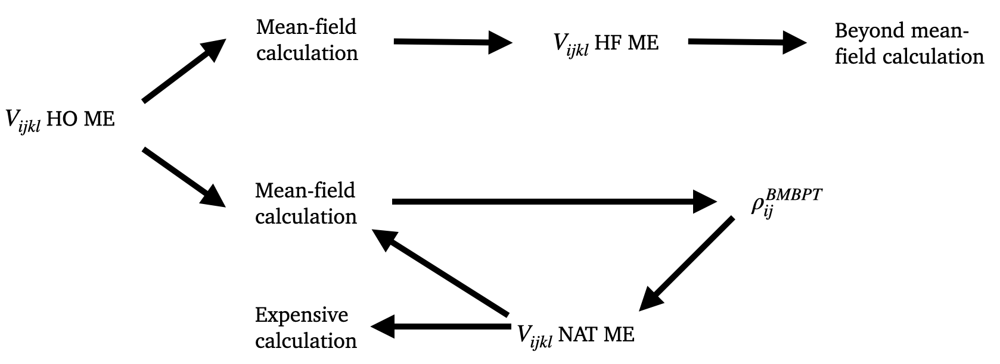

Deformed Gorkov Self-consistent Green's functions for nuclear structure calculations
Alberto Scalesi
(CEA/IRFU/DPhN)
13 May 2022
- Ab-initio methods - Deformed Gorkov SCGF theory
- Deformed bases
- Natural basis
- Ab-initio methods - Deformed Gorkov SCGF theory
- Deformed bases
- Natural basis
Ab-initio methods
- aim to solve the many-body Schroedinger equation \[\begin{aligned} H\ket{\Psi_k^A} = E_k\ket{\Psi_k^A} \\ \end{aligned} \]
- exact treatment possible only for few methods but limited to light nuclei
- NCSM, CI → factorial scaling $N!$ ($N$: one-body Hilbert space dimension)
- Montecarlo → exponential scaling $2^N$
- correlation-expansion methods to tackle heavier systems
- CC, BMBPT, SCGF → polynomial scaling $N^p$

Self-consistent Green's functions (SCGF)
Self-consistent Green's functions (SCGF)
Self-consistent Green's functions (SCGF)
State-of-the-art:
- Dyson SCGF theory (early 2000)
- doubly-closed shell
- 3-body forces (2013)
- high-precision many-body truncation (ADC(3), 2018)
Self-consistent Green's functions (SCGF)
State-of-the-art:
- Dyson SCGF theory (early 2000)
- doubly-closed shell
- 3-body forces (2013)
- high-precision many-body truncation (ADC(3), 2018)
- Gorkov SCGF theory (2011)
- singly-open shell nuclei
- breaking of the particle number symmetry $U(1)$ to
include pairing correlations
\[\begin{aligned} \ket{\Psi_0} \equiv \sum_N^{even}c_N\Psi_0^N \\ \end{aligned} \] - ADC(2) many-body truncation
Self-consistent Green's functions (SCGF)
State-of-the-art:
- Dyson SCGF theory (early 2000)
- doubly-closed shell
- 3-body forces (2013)
- high-precision many-body truncation (ADC(3), 2018)
- Gorkov SCGF theory (2011)
- singly-open shell nuclei
- breaking of the particle number symmetry $U(1)$ to
include pairing correlations
\[\begin{aligned} \ket{\Psi_0} \equiv \sum_N^{even}c_N\Psi_0^N \\ \end{aligned} \] - ADC(2) many-body truncation
Based on spherical HF/HFB states, current codes in $J$-scheme
Building blocks of SCGF
-
One-body Green's function
\[\begin{aligned} i\hbar g_{\alpha\beta}(t-t') = \braket{\Psi_0^A | \mathcal{T}[a_\alpha(t)a_\beta^\dagger(t')]|\Psi_0^A} \end{aligned} \] -
Dyson/Gorkov equation
\[\begin{aligned} g_{\alpha\beta}(\omega) = g_{\alpha\beta}^{(0)}(\omega) + \sum_{\gamma\delta} g_{\alpha\gamma}^{(0)}(\omega)\Sigma_{\gamma\delta}^\star(\omega)g_{\delta\beta}(\omega) \end{aligned} \] - Self-energy $\Sigma^\star_{\alpha\beta}(\omega)$ → effective 1B potential
- ADC(n) truncation scheme on the self-energy expansion
Analogous to the wave function and the MB Schroedinger equation in other ab-initio methods
Accessible quantities from SCGF
-
From the one-body Green's function (Lehmann's representation):
\[\begin{aligned} g_{\alpha\beta}(E) = \sum_n \dfrac{\braket{\Psi_0^A|c_\alpha|\Psi_n^{A+1}}\braket{\Psi_n^{A+1}|c_\beta^\dagger|\Psi_0^A}}{E-\textcolor{red}{(E_n^{A+1}-E_0^A)}+i\eta}\\ + \sum_k \dfrac{\braket{\Psi_0^A|c_\beta^\dagger|\Psi_n^{A-1}}\braket{\Psi_k^{A-1}|c_\alpha|\Psi_0^A}}{E-(\textcolor{red}{E_0^A-E_k^{A+1}})-i\eta} \end{aligned} \] - total binding energy (GMK sum rule)
- matter/charge radii
- spectroscopy of $A$ to odd-even $A+1$ systems
-
From the two-body Green's function → excited states of even-even $A$
- current efforts in Saclay to extend to Gorkov formalism (G. Stellin)
-
From the self-energy → optical potentials for nucleon-nucleus scattering
Excitation spectra of odd-even nuclei
Optical potentials
Optical potentials
-
Feshbach's theory of the optical potential (1958)
- tool to describe the nucleon-nucleus scattering
- partitions Hilbert space $\mathcal{H}$ in a subspace constituted by one particle added to a core nucleus
- Optical potential: effective interaction that includes the effect of the remaining part of $\mathcal{H}$
-
Extension of Feshabch's theory to the possibility of propagating a hole excitation
↓ optical potential $\equiv$ irreducible self-energy at positive energies $\Sigma^\star$
Optical potentials
- Ab initio not yet precise enough to contribute to reaction calculations
-
Their role with optical potential can still be employed as a guide for phenomenological models
- dependence on the orbital angular momenta $l$
- extract parametrization as a function of the isospin
- Current applications limited to doubly closed-shell nuclei
- Volume integrals → reliable measure of the total strength of a potential \[\begin{aligned} J_W^l(E) = 4\pi \int dr r^2 \int dr' {r'}^2 Im \Sigma_0^l(r,r';E) \end{aligned} \]
- Volume integrals averaged on the number of partial-waves $N_{\{l\}}$ \[\begin{aligned} J_W^{avg}(E) = \dfrac{1}{N_{\{l\}}} \sum_{l\in\{l\}}J_W^l(E) \end{aligned} \]
Optical potentials
Future developments in the SCGF theory
Future developments in the SCGF theory
Most of the nuclei are doubly-open shell → necessity of describing them as deformed
Future developments in the SCGF theory
Most of the nuclei are doubly-open shell → necessity of describing them as deformed
Deformed Gorkov SCGF theory
- Applicable to doubly open-shell nuclei
- Based on single-reference state breaking rotational symmetry $SO(3)$
- Built on top of a deformed-HFB solution (add a branch to the HFB3-SIMPLE code)
- Eventually the rotational symmetry must be restored
- Exploit the expansion of the Hamiltonian on a natural basis
- Three-body forces included through normal-ordering (NO)
- Based on an $m$-scheme code
Size of the one-body basis
Size of the one-body basis
- cannot exploit spherical symmetry
- ~10x basis states $N$ at $e_{max}=12$
- axial symmetry halves $N$
- expansion methods scale as $N^p$
- for fixed $p$, $N$ must be decreased
- importance truncation IT (A. Porro)
- deformed bases (?)
- natural orbitals (NAT)
- Ab-initio methods - Deformed Gorkov SCGF theory
- Deformed bases
- Natural basis
- Ab-initio methods - Deformed Gorkov SCGF theory
- Deformed bases
- Natural basis
Deformed bases
Goal of the test: explore the advantage of deformed bases in beyond mean-field methods
Definition of basis parameters
- Spherical HO ($b$, $e_{max}$, #states)
- Spherical HO ($b_\rho$, $b_z$, $Q=b_\rho/b_z$, $e_{max}$, $n_{oscill}$, #states)
Plan
- Reference calculations with spherical basis, $e_{max}=12$
- Deformed bases with additional truncation on $n_{oscill}$
- HFB/BMBPT calculations as a function of $n_{oscill}$
- $\beta_2$-constrained calculations varying $Q$ for fixed $n_{oscill}$
- Calculations compared to the reference one
Deformed bases


- No particular advantage with deformed bases for $\beta_2 < 0.30$
- $Q=1.5$, $\beta_2=0.3/0.4/0.5$ → of states respect to spherical $n_{oscill}=12$
Deformed bases

- Preliminary results: the convergence respect to different bases must still be fully investigated
- No particular advantage with deformed bases for $\beta_2 < 0.40$
- $Q=1.4/1.5$, $\beta_2=0.4$ → convergence with 36% of states respect to spherical $n_{oscill}=12$
- Ab-initio methods - Deformed Gorkov SCGF theory
- Deformed bases
- Natural basis
- Ab-initio methods - Deformed Gorkov SCGF theory
- Deformed bases
- Natural basis
Natural basis
Natural basis
Basis informed by MB correlations suited to efficiently capture correlations in the wave-functions
Natural basis
Basis informed by MB correlations suited to efficiently capture correlations in the wave-functions
- Main objective: reduce an expensive calculation to a coastless theory
- How it can be done: via an auxiliary cheaper calculation
First possibility
$V_{ijkl}$ HO ME → Mean-Field calculation → extract HF basis → expand $H$ on HF basis
Second possibility
$V_{ijkl}$ HO ME → cheap beyond mean-field calculation ((B)MBPT) → diagonalization of the density-matrix
→ extraction of the natural orbitals (NAT) → expansion of the ME on the NAT basis
→ new input for expensive calculations
Natural basis
Natural basis
- Reduces the size of the basis
- Faster model-space convergence of observables
- Saves RAM memory and computational time
Our plan:
- Extend to doubly-open shell nuclei
- Use BMBPT as cheap auxiliary method
- Extend HFB3-SIMPLE to separate treatment of p/n
- Impact several branches in HFB3-SIMPLE code
Working plan
- Deformed bases
- Finalize tests HFB3-SIMPLE code
- Natural orbitals
- Run a preliminary BMBPT calculation starting from the HO matrix elements
- Extract the Natural basis from the density matrix
- Expand the Hamiltonian on the Natural basis
- Run the SCGF calculation on the new basis
- Ab-initio deformed Gorkov-SCGF
- Formal development of the theory
- Implementation on top of HFB3-SIMPLE code
- Application with the natural orbitals + importance truncation
- Symmetry restoration (yet to be formulated)